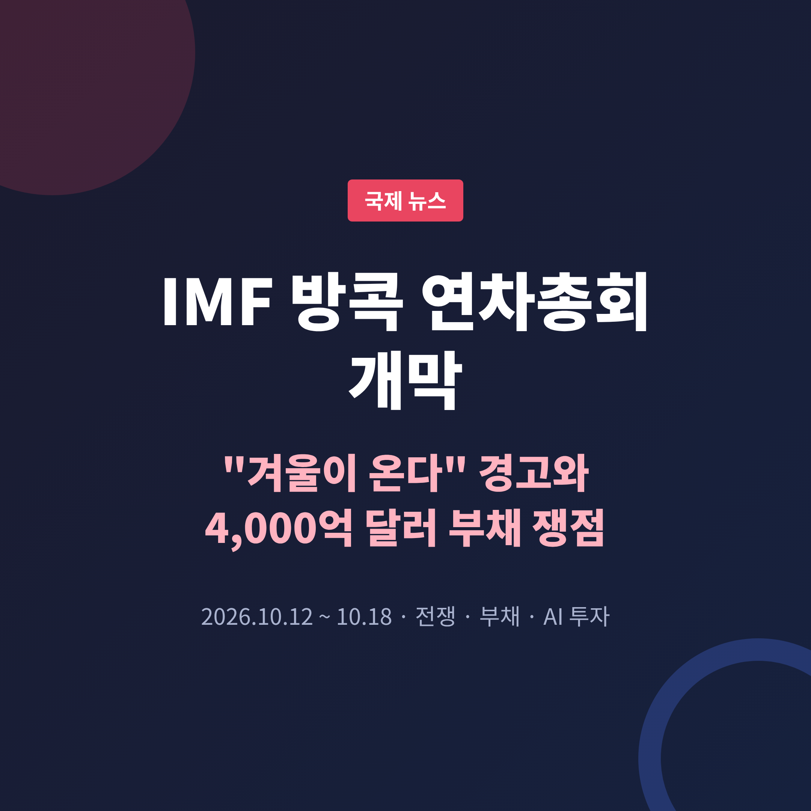
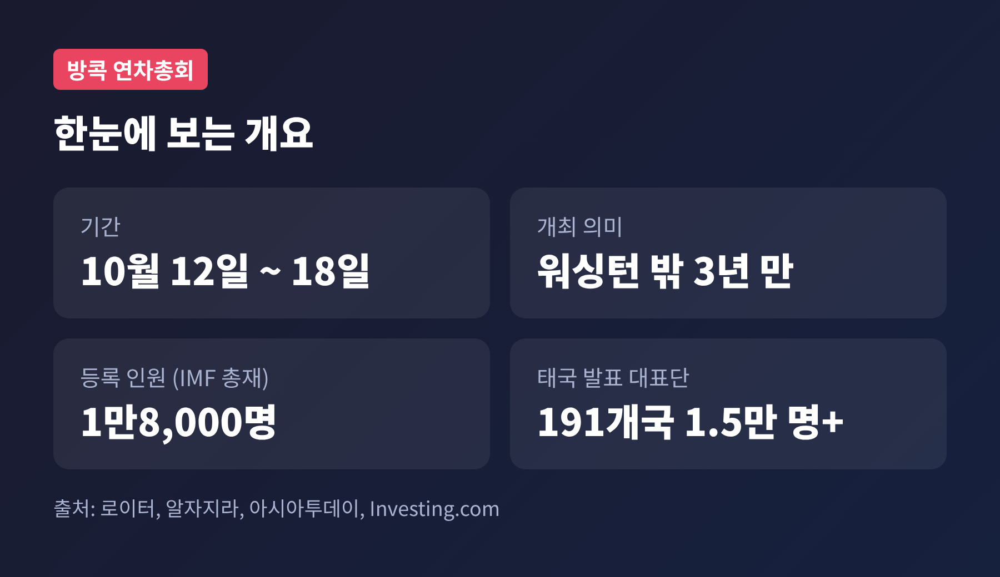
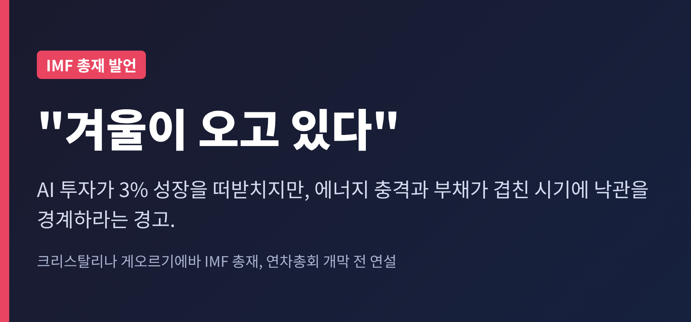
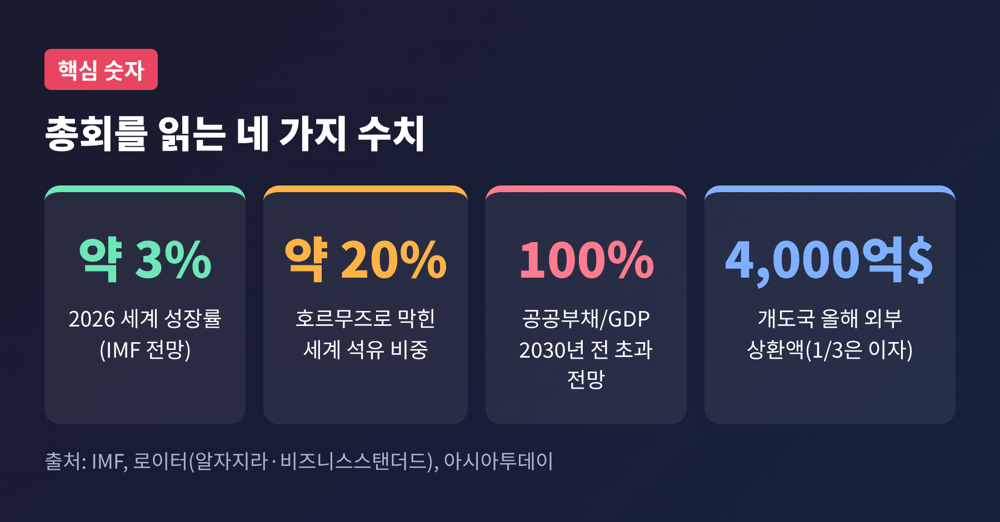
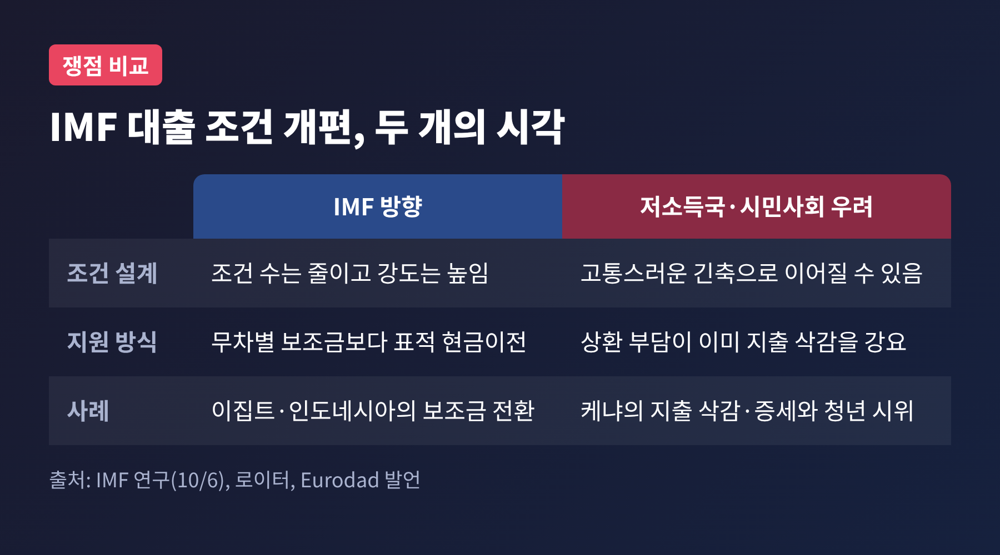
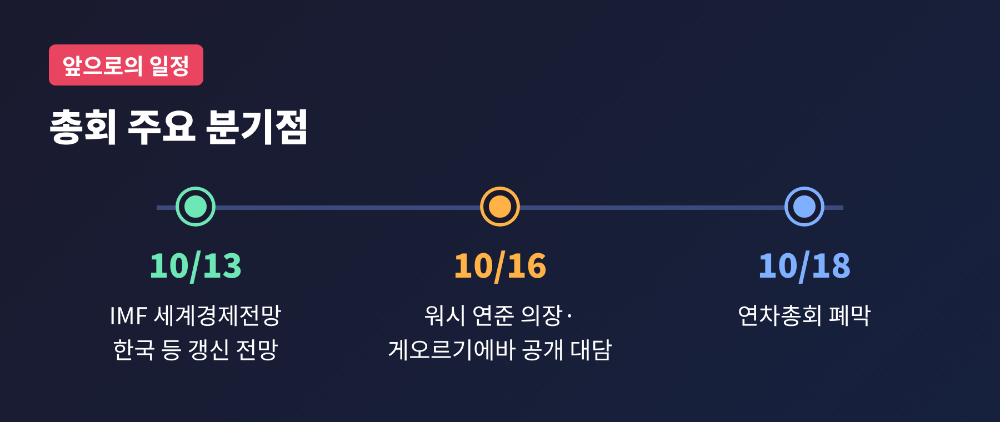

오늘은 10월 12일 방콕에서 막을 올린 IMF·세계은행 연차총회를 정리해 보려 합니다.
핵심 답부터 말씀드리면 이렇습니다. 올해 세계 성장률은 약 3%로 버티고 있지만, 이란 전쟁이 만든 에너지 충격과 사상 최고 수준의 공공부채가 겹치면서 "겨울이 온다"는 경고가 나왔습니다.
3년 만에 워싱턴 밖에서 열린 이번 총회에서 무엇이 논의되는지, 왜 한국 독자에게도 남의 일이 아닌지 차례로 짚어 보겠습니다.
IMF·세계은행 연차총회가 2026년 10월 12일 태국 방콕에서 개막했습니다. 일정은 10월 18일까지입니다.
워싱턴 밖에서 열린 것은 2023년 10월 모로코 총회 이후 처음입니다.
규모는 큽니다. 크리스탈리나 게오르기에바 IMF 총재는 1만8,000명이 등록했다고 밝혔습니다. 모로코보다 4,000명 많은 숫자입니다.
다만 태국 측은 191개국 1만5천 명 이상의 대표단이라고 발표했습니다. 집계 기준이 달라 숫자가 다르게 나오는 것으로 보입니다.
개최국의 준비도 눈에 띕니다. 정부 기관은 10월 12일, 14일, 15일에 재택근무를 하고, 10월 16일은 정부 기관과 은행의 임시 공휴일입니다. 회의장과 지정 호텔 21곳 주변에는 관광경찰 약 500명이 배치됩니다.

이번 총회의 배경에는 2월 28일 시작된 미국·이스라엘과 이란의 전쟁이 있습니다. 개막 시점에서 8개월째입니다.
이란이 호르무즈 해협을 봉쇄하면서 세계 석유의 약 20%가 막혔고, 로이터는 이를 기록상 최대 규모의 에너지 공급 충격이라고 전했습니다.
각국은 비축유로 버텨 왔습니다. 개전 이후 10억 배럴 이상이 풀렸고, 대부분 육상 상업 재고였습니다. G7은 비상 비축분에서 디젤과 원유 1억 배럴을 추가로 방출하기로 했습니다. 11월 선거를 앞둔 트럼프 대통령이 유가 안정을 압박한 결과라고 전해집니다.
업계 경영진은 접근 가능한 재고가 줄고 있다고 경고합니다.
여기에 변수가 하나 더 붙었습니다. 트럼프 대통령이 러시아로부터 디젤을 더 공급받고, 대러 제재를 일시 면제하는 합의를 발표한 것입니다. 발표일은 보도마다 10월 9일과 10일로 엇갈립니다. 젤렌스키 우크라이나 대통령은 이 결정을 비판했습니다.
에너지 가격을 잡으려는 조치가 다른 전선에서 새 갈등을 낳는 셈입니다.
게오르기에바 총재는 개막 전 연설에서 "겨울이 오고 있다"고 말했습니다. 낙관을 경계하라는 취지로 읽힙니다.

IMF는 2026년 세계 성장률을 약 3%로 유지하고, 2027년 전망은 소폭 올릴 가능성을 열어 두었습니다.
지난 7월 전망은 3.0%였고, 2024~2025년 평균은 3.5%였습니다. 한 단계 낮아진 궤도입니다.
다만 우크라이나와 이란 공격을 받은 걸프 국가는 하향 조정이 예상됩니다.
흥미로운 대목은 성장의 버팀목에 대한 총재의 설명입니다. 10월 12일 연설에서 게오르기에바 총재는 AI 인프라 투자가 강력한 수요·투자 충격을 만들고 있고, 전쟁발 에너지 충격에도 성장률이 3% 근처를 지킨 것은 이 덕분이라고 말했습니다.
IMF 추정으로는 AI 투자가 아시아 선진국 성장률을 0.5~1.0%포인트, 신흥 아시아를 0.2~0.8%포인트 끌어올립니다.
그렇다고 장밋빛만은 아닙니다. 총재는 AI를 "느리게 움직이는 쓰나미"라고 불렀습니다. 장기적으로 전 세계 일자리의 약 40%가 업무 내용이 보강되거나 약해지거나 사라질 수 있다는 추정도 함께 제시됐습니다.
성장을 받치는 힘이 고용 불안의 씨앗이기도 하다는 이중성입니다.

이번 총회에서 가장 무거운 의제는 부채입니다.
세계 공공부채는 2차 대전 이후 최고 수준이고, 2030년 전에 GDP 대비 100%를 넘을 것으로 IMF는 내다봅니다. 비율 자체는 선진국이 가장 높지만, 충격에 더 취약한 쪽은 신흥국과 저소득국입니다.
개도국은 올해 외부 채권자에게 약 4,000억 달러를 갚아야 하고, 그 3분의 1이 이자입니다. 이자 지급액은 정부 수입의 평균 10%를 넘습니다.
미국 금리가 높아 자본이 빠져나갈 위험도 있고, 슈퍼 엘니뇨와 비료·디젤 가격도 부담입니다.
예전엔 코로나라는 위기에 G20이 최빈국의 채무상환 유예에 나섰습니다. 지금은 그런 흐름이 보이지 않습니다. G20 외교관들은 높은 부채 수준과 정치적 압력을 이유로 거론합니다.
미국이 의장국인 G20 회의에 베선트 재무장관이 불참한다는 점도 분위기를 말해 줍니다. 미국 측은 국내 일정 때문이라고만 밝혔고, 그 이상의 해석은 확인되지 않았습니다.
개도국이 특히 주시하는 것은 IMF의 대출 조건 개편입니다.
방향은 조건의 수를 줄이는 대신 강도를 높이는 "더 적지만 더 깊은 개혁"입니다. 저소득국은 이것이 고통스러운 긴축으로 이어질까 걱정합니다.
시민사회의 시각은 더 비판적입니다. 유럽 부채정의 단체 유로닷(Eurodad)의 이올란다 프레스닐료는 상환 부담과 IMF 조건이 이미 지출 삭감을 강요하고 있다고 지적했습니다. 케냐가 채무 재조정을 피하려 지출을 줄이고 세금을 올리자 청년 중심의 대규모 시위가 벌어졌다는 사례도 들었습니다.
반면 IMF는 10월 6일 공개한 연구에서 무차별 보조금보다 표적 현금이전이 효과적이라는 분석을 내놓았습니다. 가격통제와 소비세 인하는 비용이 3~6배, 생산자 보조금은 22배 든다는 추정입니다. 이집트와 인도네시아는 이미 이 방향으로 옮겨 갔습니다.
양쪽 모두 일리가 있습니다. 재정을 아끼면서 가장 취약한 계층을 지키는 설계가 가능한가, 이 질문이 총회 내내 따라다닐 것입니다.

아제이 방가 세계은행 총재는 호르무즈 봉쇄 직후 우려했던 최악은 피했지만 하방 압력이 다시 커지고 있다고 말했습니다. 디젤과 비료 가격, 그리고 전문가들이 폭염 사망자 최대 45만 명을 경고하는 슈퍼 엘니뇨가 겹치는 점을 걱정했습니다. 그는 엘니뇨 하나가 아니라 겹침이 문제라고 짚었습니다.
세계은행은 당장 세계 성장 전망을 낮추지는 않는다는 입장입니다.
지원 규모도 공개됐습니다. 2월 말 마련한 250억 달러 긴급 기금은 이용이 저조했습니다. 재배정 가능한 350억 달러를 더하면 초기 500~600억 달러, 상황이 나빠지면 최대 1,000억 달러까지 가능합니다. 코로나 때 집행액 700억 달러와 비교되는 수치입니다.
현재 30~40개국과 위기 지원을 협의하고 있습니다.
전망을 좌우할 일정도 이어집니다. IMF는 10월 13일 새 세계경제전망을 내놓고, 10월 16일에는 케빈 워시 연준 의장이 게오르기에바 총재와 공개 대담을 합니다. 미국 금리 경로에 대한 시장의 힌트가 나올 수 있습니다.

게오르기에바 총재는 연설에서 한국을 직접 언급하지 않았습니다. 그래서 한국 관련 수치는 이미 나온 전망을 참고하는 수준입니다.
OECD는 지난달 한국의 올해 성장률 전망을 3.7%로 올렸고, 3개월 사이 1.1%포인트 높아진 값입니다. IMF의 7월 전망은 2.6%로, 4월의 1.9%에서 0.7%포인트 올랐습니다.
AI 투자 호황의 수혜를 보는 아시아 하드웨어 공급국에 한국이 포함된다는 해석은 가능합니다. 다만 이 부분은 총재가 명시한 내용이 아니라 보도의 맥락에서 읽히는 추정입니다.
내일 나올 IMF의 갱신 전망이 첫 확인 지점입니다.
정리하면 이렇습니다.
이번 총회는 "성장은 버티는데 방패는 얇아지는" 세계 경제의 현재를 보여 줍니다. AI 투자와 비축유가 충격을 막고 있지만, 비축은 줄고 있고 부채는 쌓였습니다.
결국 남는 질문은 하나입니다. 겨울이 오기 전에, 가장 약한 나라들의 몫을 누가 어떻게 나눠 질 것인가 하는 것입니다.
방콕의 일주일이 그 답의 방향을 조금이나마 보여 주길 기대합니다.